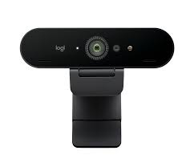
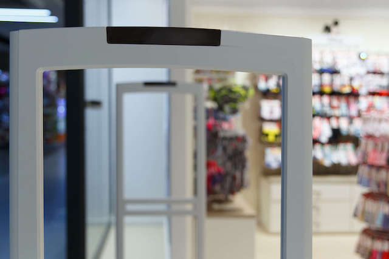
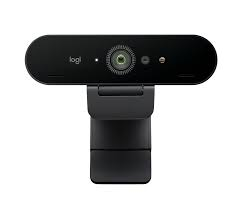
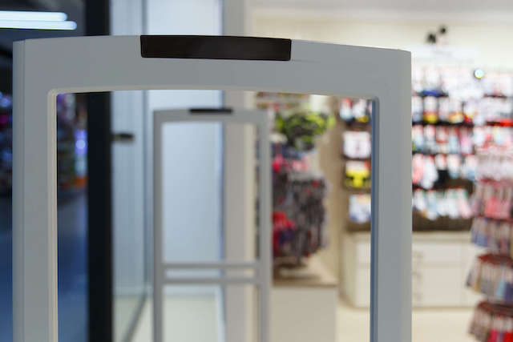

Week 1
Hello everyone back to school! It is my 2nd year, 2nd semester at Ngee Ann Polytechnic. For Portfolio Development, I have thought of an idea, regarding the use of the NFC/RFID gantries as shown below, with the combination of computer vision, to detect and identify employees when coming into work. In addition, records will be written to a database, and Business Intelligence tools such as PowerBI or Tableau will be used to make sense of the data. Our team has also been formed during this period, Ye Xuan, Damian, Thian Ping, Daryl and I will be in charge of the project, we have decided that a list of equipment that we would potentially need. We also have decided about using a software stack of
- Python (for the main binding language between the Gantry, and computer vision)
- Microsoft SQL Server (for Database)
- Tableau (business intelligence aspect)
As for the actual computer vision library, we have not decided as of yet.
For the hardware aspect, we would predict that we would need a couple of components
- A Gantry or a simulation of a gantry
- A PC to house our software
- RFID/NFC cards/tags
- A High-Definition webcam
- A Speaker (if we want to identify the person)
- A microcontroller (if Gantry does not have correct interface)
That would be it from me this week! See you guys next week.


 


